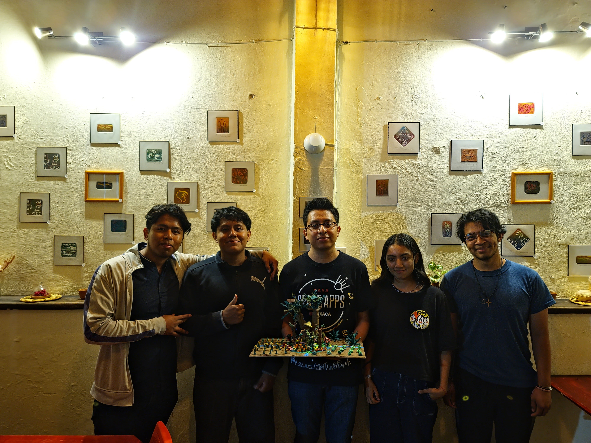

Sobre Añi Ita
Infraestructura Ecológica Activa.
El proyecto Añi Ita (Alma de Flor, en mixteco) es el plan maestro para crear una red nacional de Infraestructura Ecológica Activa. Las "Islas Polinizadoras" no son solo parches de flores; son motores de bioproductividad diseñados estratégicamente e integrados en paisajes productivos, adaptados a la región para generar un ciclo virtuoso.
Además, Añi Ita integra ciencia de datos, conocimiento ecológico y tecnología accesible para respaldar la implementación a gran escala de estas soluciones.
El Problema: La Tierra Agotada
La agricultura industrial ha roto los ciclos naturales. El monocultivo es un desierto biológico que depende de insumos externos que se agotan y encarecen.
Añi Ita rompe este ciclo de dependencia. En lugar de gastar en fertilizantes químicos, diseñamos sistemas autorregenerativos donde la misma naturaleza provee los nutrientes y el control de plagas, eliminando el desperdicio y garantizando la soberanía alimentaria a largo plazo.
Nuestro Mapa de Ruta: Autosustentabilidad Total
Añi Ita transforma la finca en un sistema vivo que no genera basura, sino riqueza.
Nuestro Equipo
En Añi Ita, creemos que cambiar el mundo empieza con personas comprometidas con la tierra, la ciencia y la vida. Nuestro equipo está formado por mentes curiosas, manos que siembran y corazones que creen en un futuro regenerativo.
